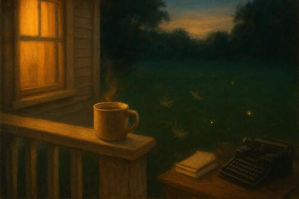

Audio reading slot ready for poetry/poems/long-time-passing.mp3.
Long Time Passing
I was thinking about the crickets last night, how they used to fill the August evenings with their persistent orchestra, rubbing their legs together in the grass like tiny violinists tuning up for a performance that never quite began, yet never ended either. Where have all the crickets gone? I ask the way the Kingston Trio used to ask about flowers and soldiers and young girls, each verse circling back to long time passing, which is what I'm doing now, I suppose, standing on the porch with my coffee, listening to the silence where the crickets should be. My daughter says it's pesticides. My neighbor says it's climate change. The internet says both, or neither, or possibly they're just hiding, waiting for some signal we can't hear, some cosmic all-clear that will bring them back in their multitudes. I remember when you couldn't walk through grass without launching a dozen of them into flight, those awkward leaps, their inability to land gracefully— the way they were always somewhere else by the time you looked down at where they'd been. Now the lawn sits there, silent as a library, which is another thing that's changing, come to think of it. Maybe the crickets left with the lightning bugs, packed their bags and caught the same train to wherever disappeared things go— that realm where payphones and handwritten letters compare notes with manual typewriters and actual film that you had to have developed to see if your pictures came out. Long time passing, indeed. Though I suppose the crickets don't measure time the way we do, in decades and generations, mourning what we've lost while checking our phones for news of other losses. They just rubbed their legs and sang, which seems, in retrospect, like a reasonable way to spend an evening. So here I am, listening for them, the way I listen for other sounds that used to be: the particular silence before the phone rings, the click of a pen when someone's thinking, the rustle of newspaper pages in the morning. All of it passing, long time passing, and me on the porch with my coffee, wondering if the crickets will ever come back, or if we'll just learn to live without them, the way we've learned to live without so much else, until someone younger asks, "What's a cricket?" and I'll have to explain about the concerts in the grass, the summer symphonies we used to take for granted, back when long time passing was just a song.